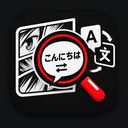

MangaLens
Traduza mangás direto na página, sem sair do seu leitor. Funciona com OCR e IA, e guarda o que já traduziu para economizar chamadas de API.
Baixar extensão (.zip)
Para Chrome · gratuita · outras versões
Instale em quatro passos
- Descompacte o ZIP em uma pasta.
- Abra
chrome://extensionse ative o Modo do desenvolvedor. - Clique em Carregar sem compactação e escolha a pasta.
- Abra uma página de mangá e pressione Alt+T.
Antes de começar, adicione suas chaves de API
Nas Opções da extensão, cole as chaves do Gemini e do DeepL. As traduções ficam melhores e alimentam o cache.
No meu uso, depois de algumas horas o cache e o MyMemory já davam conta de tudo. Ambas as APIs têm um limite gratuito generoso.